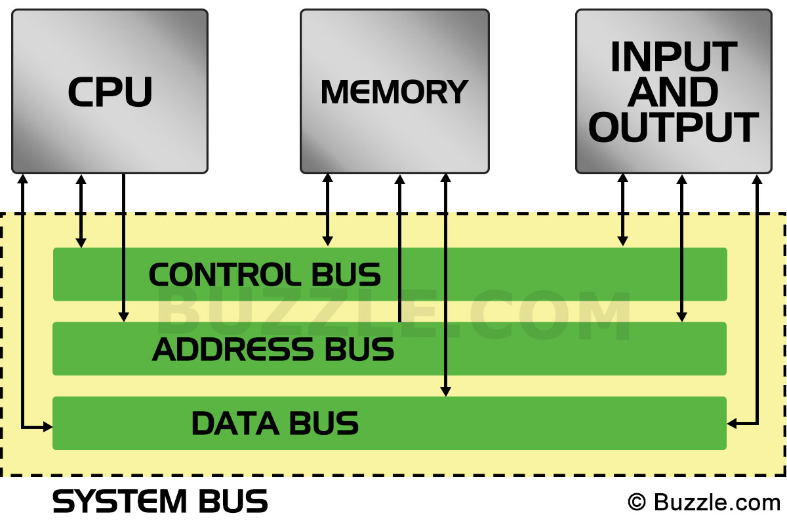

x86 Architecture: Architecture 101
Welcome to this new series of posts, this time we’ll be talking about x86-64 computer architecture, specifically, on the firsts posts, I’ll give a very very ...
Welcome to this new series of posts, this time we’ll be talking about x86-64 computer architecture, specifically, on the firsts posts, I’ll give a very very basic introduction to computer architecture, how it works, CPU, memory and more, then in future posts we’ll discuss the hardware support that Intel 64 and IA-32 architectures give to Operating Systems to achieve:
Besides talking about hardware specific support, we’ll explore how the Linux Kernel uses those hardware features from x86 processors through kernel debugging, analyzing kernel source code and implementing kernel modules that extract information to be analized.
By the moment of writing this post, I’m not sure about how many parts will compose this series, so this post will be the first out of n posts within this new series.
This first post will be about an introduction to computer architecture, we’ll discuss the components that a computer system has and how they interact between each other (just a general, but complete, description). Notice that the content in this post will be just an introduction to all those concepts, even when I would try to give you a complete and general overview of the architecture of a computer system and how it works, I’m not pretending to touch every tiny detail about the subject.
Any way, if you want to go deeper on the concepts discussed in this post, I’ll leave some useful references and links in the References section.
So, without further ado, let’s get started.!
A computer system consists of different components and subsystems that work together creating a system able to compute instructions that solve specific tasks. In order to build this kind of system, there are different ways in which you can design it, define its components, its organization and ultimately how everything works within such system. That computer’s design is called the Computer Architecture.
One of the most well known and implemented computer architecture in today’s computer systems is the Von Neumann Architecture..
There are other computer architectures that are well known and actually implemented by different processors and real applications, such as the Hardvard Architecture. Von Neumann Architecture and Hardvard Architecture have many things in common, but they differ in how some componets interact between each other, how they store and retrieve information depending on the type of information (machine instructions against data) and so on. Any way, since Intel processors implement Von Neumann Architecture, the concepts and theory about computer architecture discussed in this series will relate to Von Neumann Architecture.
Simplifying things, computer systems based on Von Neumann Architecture consist mainly in 3 well defined components:
And then, the CPU have another set of components within it:

There are some processors that implement other hardware features such as caches, or even more than one processor within a single chip.
Basic system functionality.
One of the most important features that Von Neumann brought with this architecture is that CPU instructions and data from processes are stored in memory when they are loaded to be executed, then, when a process is executing, the CPU retreives CPU instructions and data as needed. This was not the case in the early’s days of computing, when only data could be stored in memory and hardware circuitry had to be modified for each program to be properly executed. Because of this, Von Neumann Architecture systems are also referred as stored-program computers.
All computations occur inside the CPU, as mentioned before, it retrieves information (CPU instructions and/or data) from memory and stores information in memory as needed as well. The CPU instructions are retreived and executed one by one, data is stored or retreived as needed, and when the execution of the current instruction is finished, then the CPU fetches the next one and repeats the cycle (this is the normal workflow of execution if we don’t consider interrupts, I’ll cover software and hardware interrupts in a future post).
It might be the case that the current executing process requires access to a hardware device that is connected to the CPU, in that case, the CPU communicates with I/O devices either sending or fetching information to/from them.
In this type of computer architecture, to the CPU, dealing with most I/O devices is practically the same as dealing with memory. To the CPU, I/O devices and memory are just external components to which it can interact with by sending or fetching data to/from them. Any way, there are differences in the way CPUs exchange information between memory and I/O devices, and of course, we’ll talk about it :D.
Image from Art of Intel x86 Assembly book (see References section)
All this components, I/O devices, memory and the CPU, need a way to exchange information between them and the way in which that comunication is implemented is called the System Bus
In simple terms, the System Bus is just a set of electrical conexions that exists in the physical circuit (mother board of the computer) and this bus interconnects all the components in the computer system. The System Bus is literally a set of wires that transport electrical signals between computer components.
The specific implementation of the System Bus depends totally on the characteristics of the processor that’s being used but the function of the bus is always the same, to transport electrical signals between components allowing communication between them.
A typical x86 processor uses standard TTL logic levels as voltage for the transmitted signals. A standard TTL logic level zero is represented by a voltage in the range 0.0 - 0.8v, whereas a logic one is represented by a voltage level in the range 2.4 - 5v.
The System Bus can be divided in 3 different busses:

These busses have their own porpuse, but remember, all of them have the same essential function, transport electrical signals between components, the meaning of this signals and what information do the busses carry is what defines the specific function of each bus in the system.
The Data Bus.
As it’s name suggests, the Data Bus is used to shuffle data between the computer system components. Historically, the size (I mean, how many wires the bus has) has changed between different processors, having size values of:
As you might expect, the newer the processor the bigger the data bus size.
Even though all busses have different sizes between processors (data bus, control bus and address bus), the Data Bus size has more impact on the performance of the system than the other ones. Practically, a system with a 16 bit data bus is twice as fast as a system with an 8 bit data bus. And sure, having a 32 bit data bus means that the circuit has 32 physical wires, each wire is equivalent to a bit.
That way, the CPU is capable of moving data to/from memory in chunks of the same size of the data bus per memory cycle (by memory cycle, I mean the entire event of storing or fetching data and it’s totally different than CPU cycles, so don’t confuse them). In a system with an 8 bit data bus, it takes one memory cycle to fetch 8 bits of data, twice for 16 bits and so on.
It’s important to notice that the size of the data bus does not limit the size of data types that a process (program) can use. You can have 32 bit data types in a program that is running on a system with a data bus of 16 bits, this only means that it will take two memory cycles to fetch the entire 32 bit data.
Have you heard someone saying “I have a 32-bit system” or “my laptop is a 64-bit computer”? Well, it turns out that the size of the Data Bus determines what’s called the size of the processor. That way, a system with an 8 bit data bus is called an 8 bit processor, same way, a 32 bit processor has a 32 bit data bus.
Notice that the data bus is not only used to move data between the CPU and memory, it is used as well for moving data between I/O devices and the CPU. In fact, some I/O devices can appear another section in the accesible memory (remember that to the CPU, most I/O devices are kind of the same as memory).
The CPU needs a way to specify from where in memory or from where in an I/O device it wants to fecth data (or store data). The solution to this is provided by the address bus.
The Address Bus.
The CPU uses the address bus to specify the location, AKA address, from where it wants to retrieve data (and again, to where store it) either from memory or from an I/O device. So every time the CPU wants to access information in memory or in I/O devices, it just places the corresponding address in the Address Bus.
Memory and I/O devices have internal circuitry as well, when the CPU requests information from a specific address, the circuitry from memory and I/O devices recognizes that they contain the address requested by the processor, if they have such address of course, and acts in response (storing or sending data). If they don’t recongnize the address, they just ignore it.
The amount of wires that the Address Bus has determines the amount of physical addressable memory. That way, if you have an address bus with just one wire, you’d be able to address only two unique addresses, 0 and 1.
Firsts x86 processors had an address bus of 20 bits (wires) which allows them to address up to 1,048,576 different locations, which is the same as 1 MegaByte of addressable memory.
Modern processors have a 32 bits address bus, which allows them to address up to 4,294,976,296, or 4GB of addressable memory. There exist hardware mechanisms that allow an expansion of addressable memory increasing the address bus from a 32 bit address bus to a 36 bit address bus, allowing the processor to address up to 64GB of memory, but we’ll discuss it in a future post :D.
Notice that memory and I/O devices share the same address bus!
Something important is, the maximum amount of addressable memory is always the same as the address bus size, but the address bus size for I/O devices is always 16 bits long, what happens is that when accessing memory, all the address bus is used to specify the location in memory, but when accessing I/O devices, only the 16 least significat bits of the address bus are used. In consequence the processor is able to address up to 65,536 different I/O locations.
If the CPU sees memory and I/O as the same thing, how does the CPU specify that the resquested address belongs to a memory location and not to a I/O device and vice versa? How does the CPU communicates that it wants to store some data at a specific address instead of fetching data from that same address? To solve this issues, the control bus comes into the picture!
The Control Bus.
This is probably the bus that has more differences between different processors, in simple terms, the control bus is used by the CPU to send specific signals to the rest of the components that determines how it wants to communicates. For example, there are 2 dedicated wires in the control bus used to specify if the CPU wants to read data from memory or it it wants to write data to memory.
As I said, there are different designs of the control bus, but regardless those differences, there are some signals that are common between processors.
There are signals in the control bus that are used to specify when the CPU wants to read or write data, as well as signals used to specify if the CPU wants to access memory or an I/O device.
So when the CPU wants to read something from memory, it places the desired address in the address bus, and it places the respective values in the control bus specifying it wants to read instead of writing, and that it want such information from memory and not an I/O device, finally the circuitry from memory recognizes that the CPU is asking for some information from it at an specific location, if such address exists, memory places the data in the data bus and the CPU just reads it, and that’s how (in a general description) communication between CPU and memory occurs.
And in the other hand, the control bus places the respective signal on the control bus specifying it wants to write some data in memory.
Images form Art of Intel x86 Assembly book
When the CPU wants information from an I/O device, the process is mostly the same, with the only difference that the CPU places in the control bus a signal specifying that it wants such information from I/O instead of memory. In this scenario, circuitry in the I/O device recognize that the CPU requested information from it, and if it contains the requested address, it responds placing the information located at such address in the data bus. And remember, the address bus for I/O devices is always 16 bits, so the CPU places the requested address in the address bus, but using the least significant bits in the address bus and the remaining bits are just ignored.
NOTE: By the moment of writing this post I haven’t found that much information about the exact configuration of the control bus signals on different processors, because of that I’m not able to specify the name of the signals, the values and interpretation they have on real processors D:, any way as soon as I get more information I’ll update this post :D.
Just before the end of this post, let’s talk about memory. x86 processors supports byte addressable memory, which this means is that the smallest and more basic unit of memory that x86 processors are able to access is a single byte (a byte is equal to 8 bits).
You can imagine memory as an array of cells, each cell can store 1 byte, or in other words, each cell is composed of 8 bits, and the exact location of each cell within the array is what is known as the memory address.

Memory addresses will be always given in hexadecimal numbers, so it’s really important that you understand numerical systems and conversions.
When dealing with memory values and addresses, you will notice that some places uses the terms word, byte, double word and so on, so let’s explain it.
The most basic unit of memory (I’m talking about unit of memory itself, not unit of addressable memory by the CPU) is a bit, with it you can represent 2 values, 0 or 1, and those two values could mean whatever you want them to mean, black and white, on or off, up or down, or even 7541 and 500.
Then, there are the nibbles, a nibble is a collection of 4 bits and the bit that is at the most right side is called the least significant bit (LSB) in contrast with the most left side bit, which is called the most significant bit (MSB).
Then we have a byte, a byte is composed of 8 bits, or 2 nibbles, the nibble that is at the right is called the Low Order nibble and the other one is called the High Order nibble, this because the LO nibble contains the LSB and the HO nibble contains the MSB.
Then we have a word, a word consists of 16 bits, or 2 bytes, or 4 nibbles. It also has its LO nibble and HO nibble plus its HO byte and its LO byte.
Then there is the double word, a double word contains 32 bits, or 4 bytes, or 8 nibbles, and it has its LO and HO nibbles, bytes and words.
This terms apply when you are talking about memory values, sizes of data types and other cases, for instance, when reading assembly, you might see an instrucction saying something like:
MOV eax, DWORD PTR [ebx]That dword is telling that this assembly instrucction requires to access a value in memory that is a double word value, or a 4 bytes value.
Well, this is already a huge post, it might be kind of boring to learn this things, I tried to be as brief as possible but complete and concrete at the same time.
In the next post, (I’ll try to bring it soon xD), I’ll dive deep on the CPU, we’ll talk about the internals of the CPU, how they work, instruction set, registers and more, so I hope you find this post useful and informative and I encourage you to dive deeper in the subject if you are interested in.
Welcome to this new series of posts, this time we’ll be talking about x86-64 computer architecture, specifically, on the firsts posts, I’ll give a very very ...
This is the second post out of two that describes the usage of Radare2 to perform basic tasks that relate to binary analysis. In the previous post a brief in...
This is the first post out of two that describes the usage of Radare2 to perform basic tasks that relate to binary analysis. That way, instead of explaining ...